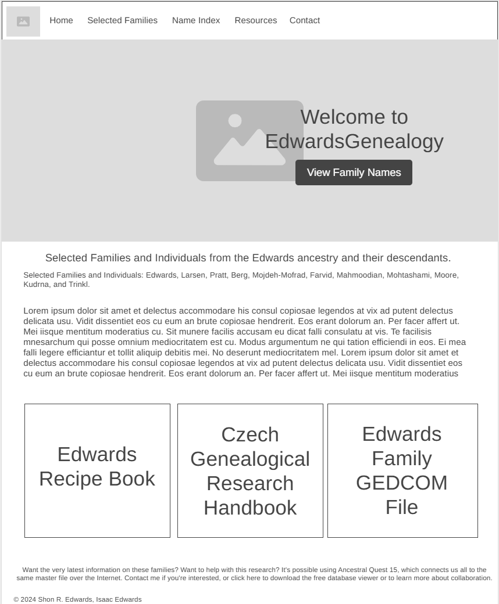
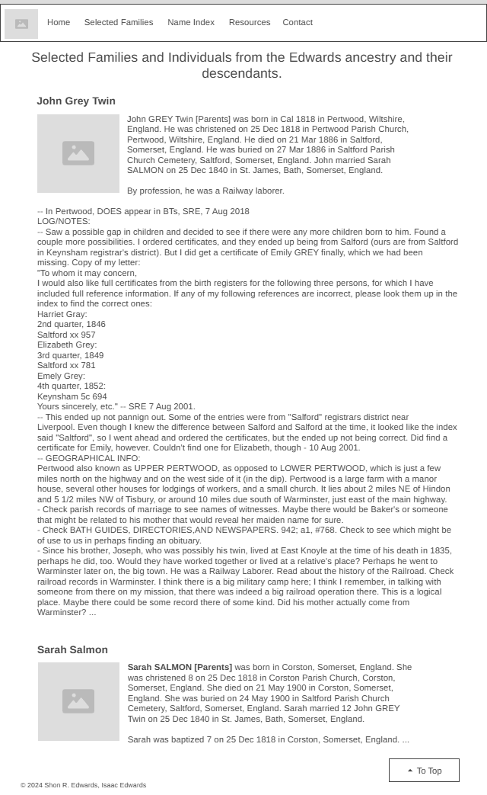

Overview
Purpose
The purpose of my website is to share and preserve my family's genealogical research. It will allow those in the Edwards family to learn about their heritage and it will also inspire those who are not relatives to learn about their own families. As a side purpose it will also give other access to our recipe book and other useful resources.
Audience
Mainly relatives of the Edwards family, but also anyone interested in genealogy. Another audience would be people interested in recieving genealogical research services from my dad.
Dynamic elements
I will use JavaScript especially on the index page. The index page lists surnames of ancestors. I will add a filter to the page using Javascript. It will search through a list of names and dynamically add it to the page with JS.
Branding
Website Logo
Style Guide
Color Palette
Palette URL: https://coolors.co/396e94-e7c24f-a43312-381d2a-aabd8c| Primary | Secondary | Accent 1 | Accent 2 |
|---|---|---|---|
| [#AF926A] | [#3F5435] | [#A26740] | [#C69558] |
Typography
Heading Font: EB Garamond
Paragraph Font: Lato
Normal paragraph example
John GREY Twin [Parents] was born in Cal 1818 in Pertwood, Wiltshire, England. He was christened on 25 Dec 1818 in Pertwood Parish Church, Pertwood, Wiltshire, England. He died on 21 Mar 1886 in Saltford, Somerset, England. He was buried on 27 Mar 1886 in Saltford Parish Church Cemetery, Saltford, Somerset, England. John married 11 Sarah SALMON on 25 Dec 1840 in St. James, Bath, Somerset, England.
Colored paragraph example
Sarah SALMON [Parents] was born in Corston, Somerset, England. She was christened on 25 Dec 1818 in Corston Parish Church, Corston, Somerset, England. She died on 21 May 1900 in Corston, Somerset, England. She was buried on 24 May 1900 in Saltford Parish Church Cemetery, Saltford, Somerset, England. Sarah married John GREY Twin on 25 Dec 1840 in St. James, Bath, Somerset, England.
Navigation
Content
Home page
Welcome to EdwardsGeneaology.
Selected Families and Individuals from the Edwards ancestry and their descendants. Selected Families and Individuals: Edwards, Larsen, Pratt, Berg, Mojdeh-Mofrad, Farvid, Mahmoodian, Mohtashami, Moore, Kudrna, and Trinkl.
Want the very latest information on these families? Want to help with this research? It's possible using Ancestral Quest 15, which connects us all to the same master file over the Internet. Contact me if you're interested, or click here to download the free database viewer or to learn more about collaboration.
[Images will include hundreds of ancestors' photos]
[Page 2]
Selected Families and Individuals from the Edwards ancestry and their descendants. Shon Robert EDWARDS [Parents]. Roya Michelle FARVID [Parents]. They had the following children. M i James Selden EDWARDS. M ii Jared Alan EDWARDS. M iii Seth Robert EDWARDS. M iv David Isaac Clifford EDWARDS. F v Brynia Marie EDWARDS. John GREY Twin [Parents] 1 was born 2, 3, 4, 5, 6 in Cal 1818 in Pertwood, Wiltshire, England. He was christened 7 on 25 Dec 1818 in Pertwood Parish Church, Pertwood, Wiltshire, England. He died 8, 9 on 21 Mar 1886 in Saltford, Somerset, England. He was buried 10 on 27 Mar 1886 in Saltford Parish Church Cemetery, Saltford, Somerset, England. John married 11 Sarah SALMON on 25 Dec 1840 in St. James, Bath, Somerset, England. By profession, (s)he was a OCCUPATION: Railway laborer. -- In Pertwood, DOES appear in BTs, SRE, 7 Aug 2018. LOG/NOTES: -- Saw a possible gap in children and decided to see if there were any more children born to him. Found a couple more possibilities. I ordered certificates, and they ended up being from Salford (ours are from Saltford in Keynsham registrar's district). But I did get a certificate of Emily GREY finally, which we had been missing. Copy of my letter: "To whom it may concern, I would also like full certificates from the birth registers for the following three persons, for which I have included full reference information. If any of my following references are incorrect, please look them up in the index to find the correct ones: Harriet Gray: 2nd quarter, 1846 Saltford xx 957 Elizabeth Grey: 3rd quarter, 1849 Saltford xx 781 Emely Grey: 4th quarter, 1852: Keynsham 5c 694 Yours sincerely, etc." -- SRE 7 Aug 2001. -- This ended up not pannign out. Some of the entries were from "Salford" registrars district near Liverpool. Even though I knew the difference between Salford and Salford at the time, it looked like the index said "Saltford", so I went ahead and ordered the certificates, but the ended up not being correct. Did find a certificate for Emily, however. Couldn't find one for Elizabeth, though - 10 Aug 2001. -- GEOGRAPHICAL INFO: Pertwood also known as UPPER PERTWOOD, as opposed to LOWER PERTWOOD, which is just a few miles north on the highway and on the west side of it (in the dip). Pertwood is a large farm with a manor house, several other houses for lodgings of workers, and a small church. It lies about 2 miles NE of Hindon and 5 1/2 miles NW of Tisbury, or around 10 miles due south of Warminster, just east of the main highway. - Check parish records of marriage to see names of witnesses. Maybe there would be Baker's or someone that might be related to his mother that would reveal her maiden name for sure. - Check BATH GUIDES, DIRECTORIES,AND NEWSPAPERS. 942; a1, #768. Check to see which might be of use to us in perhaps finding an obituary. - Since his brother, Joseph, who was possibly his twin, lived at East Knoyle at the time of his death in 1835, perhaps he did, too. Would they have worked together or lived at a relative's place? Perhaps he went to Warminster later on, the big town. He was a Railway Laborer. Read about the history of the Railroad. Check railroad records in Warminster. I think there is a big military camp here; I think I remember, in talking with someone from there on my mission, that there was indeed a big railroad operation there. This is a logical place. Maybe there could be some record there of some kind. Did his mother actually come from Warminster? If she did, she could be Mary BAKER. His father could have gone there, too. In the actual parish record, Mary and Thomas are both listed as being from the parish of St. Denys, Warminster. The marriage took place in 1810. They didn't have kids til at least 1814, possibly not til 1816. Write to SRO for where to find his obituary. Maybe it would have info. Newton St. Loe 1,545,233:20 lists names of property owners and occupiers 1766-1832. Even if find, maybe this is dead end, but maybe you could locate a time when he arrived. 1841 census: FHl 464,195 (SLC). Check it!! Ann, the youngest, would have been 19 in the census, though, and thus may or may not be there. If you really want to find Ann, look at marriages in West Knoyle in the thirties and forties. You may not find anything on the '41, since it will only say if born in the county. Check church records, for sure. Check '41 for John and James to see if they are in a '41 census somewhere. John was in Corston 1841 and Saltford 1851. James was in Newton St. Loe 1851, 1841 not known. If Newton, maybe look to see if his sister is with him. If 1881 census comes out on computer, do a search on an "Ann" (don't list surname!) from "Pertwood". -- Found familyof John GREY on several censues: 1841 Corston, Somerset, England census, FHL 474605, H. O. 107/1961 E.D. 3, p. 14. [Much more data...]
Wireframes
Create two wireframes for your site. One for each page and list them here
Home
The filler text will be replaced by a summary of the website and explanation. The three tiles below are clickable links.
[Page 2]
Will add functionality to the button that brings user to the top of the page.
